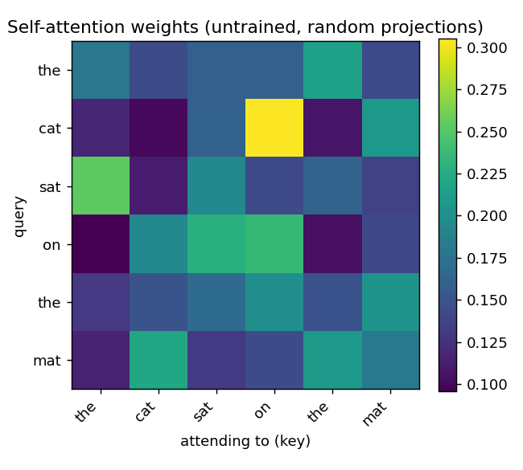
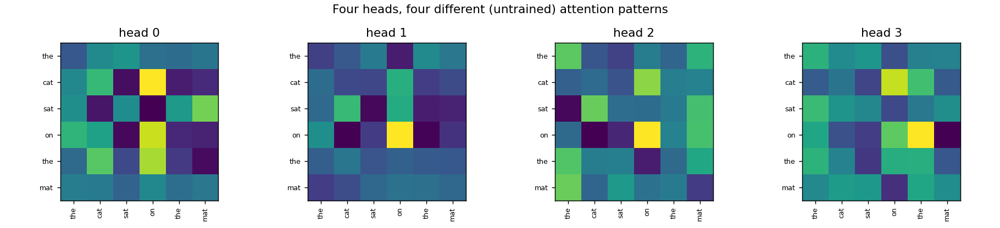
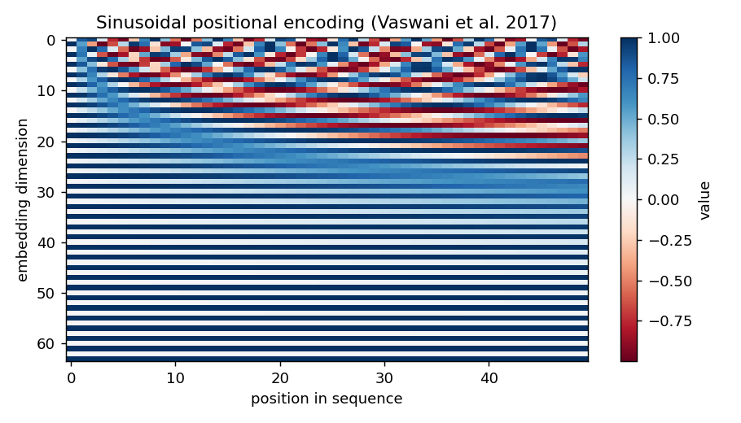
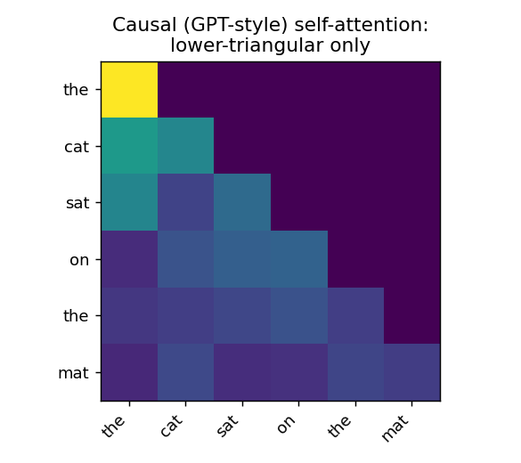
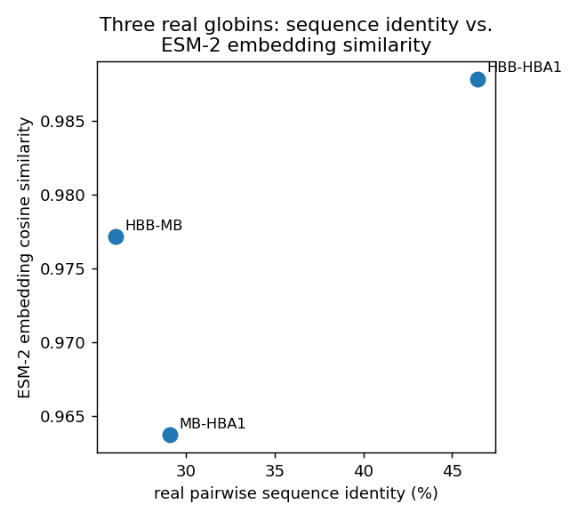

12 Day 12: Attention and Transformers
Sources for this page: d2l.ai, Dive into Deep Learning, Attention Mechanisms and Transformers — CC BY-SA 4.0; Wikipedia, Attention (machine learning) — CC BY-SA 4.0; Vaswani et al. (2017), “Attention Is All You Need”; Jumper et al. (2021), “Highly accurate protein structure prediction with AlphaFold”, Nature; a real, working blog explainer of the Evoformer, linked directly in Arne’s own slides — “AlphaFold 2 Is Here: What’s Behind the Structure Prediction Miracle”; Pennington, Socher & Manning (2014), GloVe word vectors, via gensim. Mined for ideas, not copied: slides/EkmanSlides-Chapters-12-15.pdf and notebooks/ch12.ipynb-ch15.ipynb (Ekman-derived: word embeddings, seq2seq, Bahdanau/Luong attention, self-attention, multi-head attention, positional encoding, a Transformer encoder block, and an ESM protein-language-model example) and Arne’s own 207-slide slides/AlphaFold 2026 (Undervisning).pptx, mined only for its attention/Evoformer portion (slides 68-71, 97-100) — the physics-based-potentials/MSA/ coevolution history it opens with is already Days 5 and 10’s territory, not repeated here. Text below is written from scratch. Every number is computed in the notebook, not asserted.
12.1 Learning goals
By the end of this session you should be able to explain attention as a learned, differentiable search over a sequence; describe the history that led from word embeddings to the Transformer; describe how the same decoder architecture, trained by next-token prediction, is what a GPT model is; describe, at a conceptual level, what AlphaFold’s Evoformer changed relative to the profile+network lineage built up since Day 5; and describe what a protein language model is.
12.2 From word vectors to “Attention Is All You Need”
Before attention, this field had to solve a smaller problem first: representing a discrete symbol — a word, or a residue — as something a neural network can actually compute with. A one-hot vector (Day 8) works but treats every pair of words as equally unrelated. Word embeddings (word2vec, GloVe) fix this by learning a vector per word from how it’s used in a huge text corpus, so that words used in similar contexts end up nearby in vector space — and, famously, so that vector arithmetic can capture relationships:
\[ \text{king} - \text{man} + \text{woman} \approx \text{queen} \]
This isn’t a slogan — the notebook computes it directly on real, pretrained GloVe vectors and gets queen back with cosine similarity 0.85, ahead of every other word in the vocabulary.
The path from there to the Transformer is a chain of one-fix-at-a-time engineering, not a single leap:
- Sequence-to-sequence translation (Day 11’s encoder-decoder RNN, applied to translation): an encoder compresses the whole source sentence into one fixed-length vector, a decoder generates the target sentence from it.
- The bottleneck: one fixed-length vector has to summarize an entire sentence, however long — quality degrades badly on long inputs.
- Bahdanau/Luong attention (2014-2015) fixes this by letting the decoder look back at all of the encoder’s hidden states at every output step, weighted by a learned relevance score — attention bolted onto an RNN, not yet its own architecture.
- Vaswani et al. (2017), “Attention Is All You Need” asks: if attention is doing all the real work, do we need the RNN at all? The answer was no — the Transformer is built entirely from attention (plus feed-forward layers), with no recurrence, which also makes it far more parallelizable to train than any RNN.
12.2.1 Further reading
12.3 Attention as differentiable search
Every attention mechanism answers the same question at every position: which other positions matter, and how much? Concretely, each position’s representation is projected into three vectors — query (what this position is looking for), key (what a position offers to be matched against), and value (what gets returned if matched) — and the output is a weighted sum of values, weighted by how well each query matches each key:
\[ \text{Attention}(Q, K, V) = \text{softmax}\!\left(\frac{QK^\top}{\sqrt{d_k}}\right) V \]
This is worth stating plainly: it is a learned, differentiable version of exactly what Day 5’s BLAST does. BLAST searches a fixed database using a fixed heuristic (word matching, then extension) to decide what’s relevant. Attention learns what makes something relevant — the projections that produce \(Q\), \(K\), and \(V\) are trained end-to-end, rather than hand-designed — and it searches within a single input (self-attention) rather than against an external database.

A single attention head can only learn one kind of relationship at a time. Multi-head attention runs several heads in parallel, each with its own projections, then combines them — letting different heads specialize in different kinds of relationships:

Real Transformers also add positional encoding (attention alone has no notion of order — shuffle the input and every query/key/value pair is unchanged) and stack many attention+feed-forward blocks, each with a residual connection and layer normalization, exactly the way Day 9’s hidden layers stacked:

12.3.1 Further reading
- d2l.ai, Attention Mechanisms and Transformers — the full mechanical detail (multi-head attention, the Transformer architecture end-to-end) beyond what’s needed here
- Vaswani et al. (2017), “Attention Is All You Need” — the original paper
12.4 The GPT coupling: one masking change
Everything above lets every position attend to every other position — exactly right for an encoder that sees a whole input at once (a sentence for translation, or a whole protein sequence for a protein language model). A decoder-only model like GPT generates one token at a time and must never be allowed to peek at tokens it hasn’t generated yet. The fix is a single change: a causal mask that sets every “attend to a future position” score to \(-\infty\) before the softmax, so it becomes exactly zero afterward:

That’s the entire architectural difference between an encoder and a GPT-style decoder. Train a stack of causal self-attention blocks by next-token prediction on a huge unlabeled text corpus, and that is a GPT model — the same self-supervised idea Day 11 already introduced for UniRep (predict the next amino acid, on an LSTM), now redone with attention instead of recurrence, at a much larger scale. This is the direct bridge into protein language models: ESM, ProtBERT, and ProstT5 (Day 11’s forward reference) are this same GPT-family recipe, applied to protein sequences instead of English text.
12.4.1 Further reading
- Wikipedia, GPT (language model) — the family of models this section describes, in more depth
12.5 AlphaFold, conceptually
AlphaFold2 (2020) is where this course’s two threads — Day 5’s profile information and this day’s attention — actually meet. Its core module, the Evoformer, does not throw away the MSA/coevolution idea from Day 5 and Day 10; it processes it with attention instead of a fixed profile score or a CNN over a static contact map. Concretely, the Evoformer maintains two representations that update each other: a representation per sequence in the MSA, and a representation per pair of residues. Row-wise attention lets each sequence’s representation attend across columns (positions) within it; column-wise attention lets information flow across the different sequences in the MSA at a fixed position — both are the same query/key/value mechanism above, just applied to a 2D array (sequences × positions) instead of a 1D sentence. A triangular update rule then lets the pairwise representation enforce basic geometric consistency (if residue A is close to B, and B is close to C, that constrains how close A and C can be) — dozens of these blocks are stacked before the structure module converts the final representation into 3D coordinates.
AlphaFold3 (2024) replaced the Evoformer with a related but simplified Pairformer, which leans more on the pairwise representation and less on the raw MSA — evidence that the specific attention pattern is still an active area of iteration, not a settled final architecture.
12.5.1 Further reading
- “AlphaFold 2 Is Here: What’s Behind the Structure Prediction Miracle” — an accessible explainer of the Evoformer, linked directly in the source slides for this page
- Jumper et al. (2021), “Highly accurate protein structure prediction with AlphaFold”, Nature — the primary AlphaFold2 paper
12.6 Protein language models
A protein language model is exactly the GPT recipe above (or, for ESM, a masked/bidirectional variant of it — an encoder, not a decoder), pretrained on real protein sequences instead of text, with no alignment, no MSA, and no labels required. The notebook computes this directly rather than just describing it: real ESM-2 embeddings for three real globins used throughout this course (HBB, myoglobin, and HBA1) land closer together in embedding space exactly when their real, independently-computed pairwise sequence identity is higher —

— continuing directly from Day 11’s UniRep (an LSTM-based protein language model) and setting up ProstT5’s bilingual sequence/structure embeddings, both introduced there as forward references.
12.7 Check your understanding
12.8 The notebook
notebooks/day12-attention-and-transformers-in-code.ipynb builds the Transformer up piece by piece, computing every claim above directly: the king-man+woman≈queen check on real pretrained GloVe vectors, self-attention and multi-head attention from scratch (with the attention heatmaps above), a causal mask verified to assign exactly zero weight to every future position, sinusoidal positional encoding, a minimal Transformer encoder block (verified to preserve its input’s shape, which is why it can be stacked), and the real ESM-2 embedding-vs-sequence-identity comparison for three real globins. Adapted from this project’s own notebooks/ch12.ipynb-ch15.ipynb and protein_contact_prediction.ipynb’s ESM usage. Open it in Google Colab via the badge at the top of the notebook page to edit and run it yourself.
12.9 The lab
A light, demo-heavy exercise, not a from-scratch build (implementing a full Transformer from scratch in one session isn’t realistic, and isn’t the point): explore the notebook’s ESM-2 embeddings for a protein of your choice — fetch a real UniProt sequence, compute its embedding, and compare it against the three globins already there.
12.9.1 Submitting this lab
Hand-in/grading for this lab isn’t set up yet. It will likely run through a Canvas assignment — check the course’s Canvas page for the actual submission mechanism before this session runs.
12.10 What’s next
Day 13 (if it runs) picks up the generative thread this course hasn’t touched yet: diffusion and flow-matching models, from DALL-E to RFdiffusion and Chroma. Otherwise, the capstone project picks up directly from here: the same secondary-structure-prediction problem posed descriptively on Day 7, now solvable with every tool built up from Day 5’s profiles through this day’s attention.